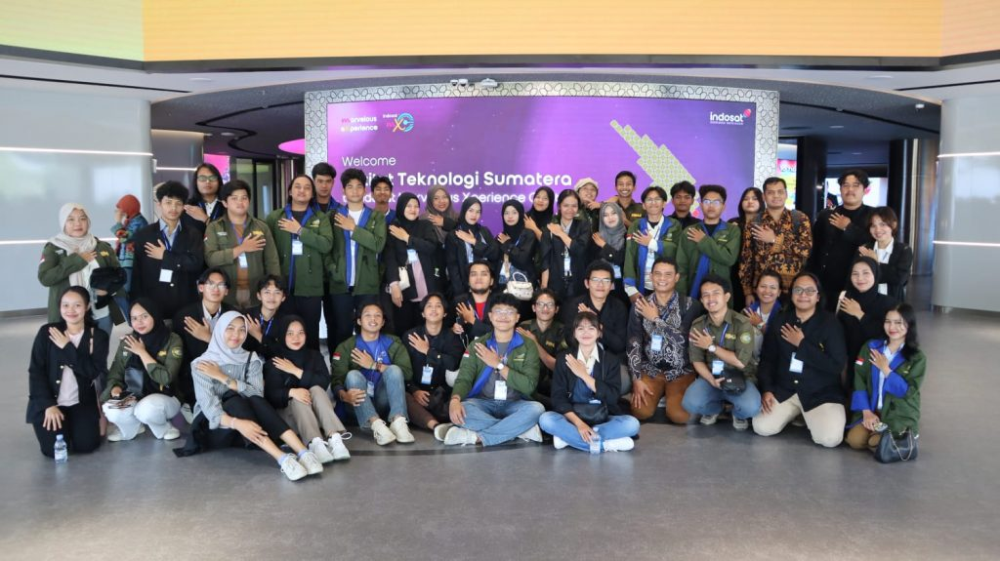

Dari Jakarta Smart City ke Indosat : Mahasiswa Informatika Jelajahi Inovasi Digital Melalui Kuliah Lapangan
Tanggal : 4 Oktober 2024
Program Studi Teknik Informatika Institut Teknologi Sumatera (ITERA) sukses menggelar Kuliah Lapangan selama dua hari berturut-turut, membawa 101 mahasiswa dan 8 pendamping untuk belajar langsung dunia teknologi informasi yang dinamis di Jakarta. Kegiatan ini merupakan langkah strategis untuk memperkaya pemahaman mahasiswa terhadap penerapan teknologi terkini di industri, sekaligus menginspirasi mereka untuk menjadi lulusan yang siap berkompetisi di era digital.
Pilihan Jakarta sebagai tujuan Kuliah Lapangan bukan tanpa alasan. Sebagai pusat bisnis dan teknologi di Indonesia, Jakarta menyajikan beragam ekosistem digital yang menarik untuk dipelajari. Dengan mengunjungi lima instansi terkemuka di bidang teknologi informasi, yaitu Jakarta Smart City, Indonesia Indicator, Indonesia Data Center (IDC), HP Inc, dan Indosat, mahasiswa diajak untuk melihat secara langsung bagaimana teknologi informasi berperan dalam memecahkan masalah-masalah nyata dan mendorong inovasi.
Perjalanan dimulai dengan mengunjungi Jakarta Smart City yang didampingi oleh Koordinator Program Studi Teknik Informatika, Andika Setiawan, S.Kom., M.Cs. Di sini, mahasiswa diperkenalkan dengan aplikasi Jakarta Kini (JAKI), sebuah inovasi yang memudahkan warga mengakses berbagai layanan publik secara digital. Melalui JAKI, warga dapat melaporkan kerusakan infrastruktur, mencari informasi lowongan pekerjaan, hingga mengurus administrasi kependudukan. Pengalaman ini memberikan gambaran nyata kepada mahasiswa tentang bagaimana teknologi dapat meningkatkan kualitas hidup masyarakat.
Di hari kedua, peserta dibagi menjadi beberapa kelompok untuk mengunjungi instansi yang berbeda. Di Indonesia Indicator, mahasiswa belajar tentang analisis data dan bagaimana data dapat dimanfaatkan untuk membuat keputusan bisnis yang lebih baik. Sementara itu, kunjungan ke IDC Indonesia memberikan wawasan mendalam tentang pusat data dan cloud computing. Mahasiswa berkesempatan melihat langsung ribuan server yang menopang layanan digital perusahaan-perusahaan besar seperti Alibaba Cloud dan Telkomsel.
Kuliah Lapangan ini memberikan banyak manfaat bagi mahasiswa Teknik Informatika ITERA. Salah satu peserta yang mengikuti kegiatan ini mengatakan bahwa dari kuliah lapangan ini ia belajar lebih banyak tentang industri IT sesungguhnya. Beberapa poin penting yang dapat diambil dari kegiatan ini antara lain ialah bagaimana penerapan teknologi dalam kehidupan sehari-hari dimana mahasiswa dapat melihat secara langsung bagaimana teknologi informasi digunakan untuk memecahkan masalah-masalah nyata di masyarakat, seperti pengelolaan kota pintar dan layanan publik. Mahasiswa juga belajar mengenai inovasi teknologi terbaru dimana Mahasiswa diperkenalkan pada berbagai teknologi terbaru seperti AI, IoT, dan pusat data yang saat ini sedang menjadi tren di industri teknologi. Manfaat lainnya ialah adanya potensi karir yakni kegiatan ini memberikan gambaran kepada mahasiswa mengenai peluang karir di bidang teknologi informasi dan jenis pekerjaan yang dapat mereka tekuni setelah lulus.
Kuliah Lapangan Teknik Informatika ITERA merupakan kegiatan yang sangat bermanfaat bagi mahasiswa dalam mempersiapkan diri menghadapi dunia kerja yang semakin kompetitif. Melalui kegiatan ini, mahasiswa tidak hanya memperoleh pengetahuan teoritis, tetapi juga pengalaman praktis dalam menerapkan ilmu yang telah dipelajari. Kuliah Lapangan ini diharapkan dapat meningkatkan motivasi belajar mahasiswa, memperluas jaringan profesional, dan menumbuhkan jiwa kewirausahaan. Dengan demikian, mahasiswa akan lebih siap menghadapi tantangan dunia kerja yang dinamis dan berkontribusi dalam menciptakan solusi teknologi yang inovatif.
Subjudul
Informasi tambahan tentang berita ini.
| Kolom 1 | Kolom 2 | Kolom 3 |
|---|---|---|
| Data 1 | Data 2 | Data 3 |
| Data 4 | Data 5 | Data 6 |